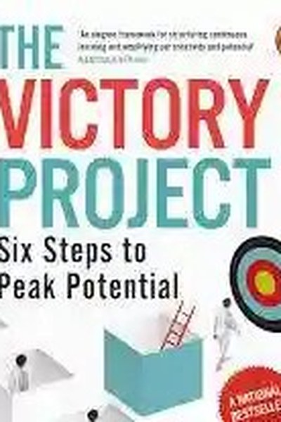

Library › Money & Finance
The Victory Project — Summary & Key Lessons

Six steps to peak performance in investing — and in life.
📖 OPEN THE FULL INTERACTIVE BREAKDOWN →🌐 Read it in Hindi, Hinglish, Gujarati, Tamil & 22 more languages — free, with audio.
💡 The Big Idea
After studying India's best investors and most successful professionals, Mukherjea distills peak performance into six repeatable stages: Set the right goal, form the right strategy, execute with discipline, review honestly, adapt to new evidence, and let time compound the result. The book applies the same machine to money and to life: most people fail not from lack of talent but from skipping stages — vague goals, borrowed strategies, no reviews, no compounding. The victory project is the operating system of sustained excellence.
🧠 The 6 Key Lessons
Lesson 1: Set Goals That Are Yours
Stage 1: The Goal
Mukherjea's first lesson: most goals are borrowed — from parents, peers, society. A borrowed goal produces a strategy you'll abandon at the first obstacle. The right goal is specific, personal and big enough to motivate for a decade. Write it down, and write why it matters to you.
📖 Example: 'I want to be rich' is a borrowed goal that dies in year two. 'I want a ₹3 crore portfolio by 45 so my parents never worry about money' is a goal with a why. The practical edge: 'set goals that are yours' is not a one-time decision — it's a habit that… Read the full example →
⚡ Do this: Write your financial and career goals with a 'why' for each. Delete any goal whose why is someone else's.
Lesson 2: Borrow Strategies Only From Proven Masters
Stage 2: The Strategy
Don't invent your own path — study the best and adapt their proven frameworks. For investing, Mukherjea's own strategy is the CCE lens (competitive advantage, clean accounting, efficient capital allocation) plus patience. For life, it's the same: pick a master, learn their system, adapt it to your context. Originality is overrated; execution of a good borrowed system is underrated.
📖 Example: Mukherjea's own 'Coffee Can' and CCE frameworks are themselves adaptations of Buffett-style quality investing — applied to India with Indian data. Here's the part that usually gets missed: 'borrow strategies only from proven masters' works quietly. You won't… Read the full example →
⚡ Do this: Pick one master in your field. Write their core framework in your own words and identify the one adaptation your context requires.
Lesson 3: Execution Is a Daily Habit, Not an Event
Stage 3: The Execution
The best strategy is worthless without daily discipline. Mukherjea's advice: break the strategy into daily non-negotiables — an hour of reading, a monthly SIP, a weekly review. The goal gives direction; the habit gives distance. Consistency is the only execution strategy that survives contact with real life.
📖 Example: An investor with a perfect CCE portfolio who checks it daily and sells in panic fails; the boring monthly-SIP investor with an average strategy compounds. The real test of this lesson is a bad day: the principle that survives a crisis, a tight deadline and a… Read the full example →
⚡ Do this: Convert your strategy into three daily or monthly non-negotiables. Schedule them like meetings.
Lesson 4: Review Honestly, Without Ego
Stage 4: The Review
Mukherjea insists on regular, honest reviews — what worked, what didn't, why. The review is where most people cheat: they celebrate wins they didn't earn and explain away losses. A real review is uncomfortable and indispensable. Your system improves only at the speed of your honesty.
📖 Example: Traders who journal every trade and review weekly improve; those who only remember their wins repeat their losses. In practice, 'review honestly, without ego' shows up in tiny daily choices long before it shows up in outcomes — the choice is invisible, but… Read the full example →
⚡ Do this: Start a weekly 15-minute review: one win (and its real cause), one loss (and its real cause), one adjustment.
Lesson 5: Adapt When the Evidence Changes
Stage 5: The Adaptation
The fifth stage is the one most systems miss: updating the strategy when the world changes. Mukherjea's cautionary tales are the companies that kept executing a dead strategy perfectly. The rule: your goal is fixed, your strategy is a hypothesis — re-test it against evidence at every review.
📖 Example: An investor who refused to update his 'buy banks' thesis through 2018-19's stress would have paid heavily; adaptation, not stubbornness, protects capital. Most people nod at this principle and change nothing. The gap between agreeing and acting is where the… Read the full example →
⚡ Do this: Ask at your next review: what would prove my strategy wrong? Monitor that specific signal.
Lesson 6: Let Time Do the Heavy Lifting
Stage 6: The Compounding
The final stage: after goal, strategy, execution, review and adaptation — wait. Compounding rewards patience brutally: the difference between 15% and 18% annual returns over 20 years is enormous, and both require just sitting still. The same applies to skills, relationships and reputation: consistency over decades beats intensity over months.
📖 Example: Mukherjea's data shows how a small, quality portfolio held for a decade massively outperforms churning — the compounding did the work, not the activity. The uncomfortable truth about this lesson: it requires doing the boring version first — the unglamorous… Read the full example →
⚡ Do this: Pick one asset — investment, skill, relationship — and commit to 12 months of no-churn. Set the review date and leave it alone until then.
✅ 5-Step Action Plan
- Write goals with real 'why's; delete borrowed ones.
- Pick a master and write their framework in your words.
- Convert strategy into daily non-negotiables.
- Start a weekly 15-minute honest review.
- Commit one asset to 12 months of no-churn.
⚠️ When This Doesn't Work
Mukherjea's six-stage framework assumes the stages are followed honestly — Bill Hwang followed a strikingly similar system (clear goals, borrowed strategy from a master, disciplined execution) and blew up $20 billion because the strategy itself was leverage-scaled and the 'reviews' were self-congratulation. The caveat: a perfect process with an unexamined premise compounds the premise. The Victory Project's reviews must include the hardest review of all: is the strategy itself still true, or am I just executing it beautifully? Process discipline and premise blindness can coexist.
💀 The Graveyard Proves It
📉 Archegos Capital — $20 Billion Vaporized in 2 Days. Burn: $20B personal + $10B for banks. Read the full case study →
💬 Best Quotes from The Victory Project
- “Success is not a destination; it is a process of continuous improvement.”
- “Compounding works only if you stay invested — in markets and in life.”
- “The goal must be yours, or the strategy will always feel wrong.”
Interactive version: mark lessons as read, listen in your language, share quote cards.